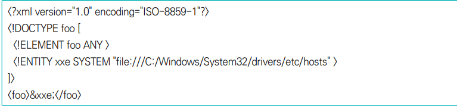
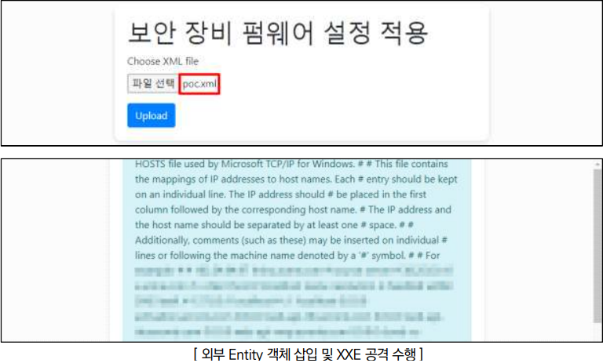

XXE injection이란?
- 웹 애플리케이션이 XML 데이터를 처리할 때, 외부 엔티티(External Entity) 정의를 적절히 제한하지 않아 발생하는 취약점입니다.
- 공격자는 이를 악용하여 서버 내부의 파일을 읽거나, 내부 네트워크의 다른 서버에 요청을 보내는 등의 공격을 수행할 수 있습니다.
점검 방법
Step 1) 파일 업로드 페이지, API 엔드포인트, HTML Form 등 XML을 파싱하는 페이지 포인트 내 XML 객체 삽입 시도 (※ 예로 제시한 것으로, 웹 사이트 환경에 맞춰 점검해야 함
 
조치 방법
1. 허용된 태그와 속성만 사용하도록 화이트리스트 방식을 이용한 입력값 검증 로직 구현
2. 최근 언어별 XML 파서의 경우, 기본적으로 외부 엔티티 처리가 비활성화되어 있으나 소스코드 상에서 명시적으로 비활성화 처리하는 것이 안전한 방법
3. 의도하지 않은 오동작이 발생할 가능성이 존재하는 외부 엔티티 참조 명령어 및 주요 스키마 등에 대하여 웹 방화벽에 룰셋 적용